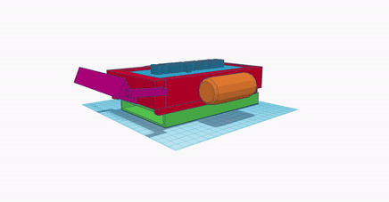

Exponemos una presentación sobre qué es exactamente el proyecto "ERTS".
Funcionalidad
El proyecto ERTS, ya mencionado anteriormente, es un robot diseñado para funcionar en el humedal, recolectando basura y limpiando el ecosistema. Empezaremos describiendo los componentes eléctricos y plásticos que componen el robot.

Componentes del Robot
1. Flotadores (naranjas): Proporcionan la flotabilidad necesaria para que el robot se mantenga a flote y estable en el agua.
2. Pala (morado): Se encarga de recoger la basura del agua y depositarla en el área de almacenamiento.
3. Caja de Reciclaje (verde): Almacena los desechos recogidos, permitiendo su posterior eliminación o reciclaje.
4. Caja Principal (rojo): Contiene los componentes centrales y el sistema de control del robot.
5. Componentes Eléctricos (azul): Incluye la batería, los motores y otros elementos eléctricos necesarios para el funcionamiento del robot.
Avances Del Proyecto
Realizamos simulaciones de lo que tiene que hacer el robot. Por ejemplo, la flotabilidad del robot debe ser adecuada para que tenga buen equilibrio en el agua, evitando hundimientos que puedan dañar los componentes electrónicos o el ecosistema.
y otro donde probabamos el sistema de recoleccion de basura
Estadísticas De Resultados
Realizamos una encuesta a 10 personas que viven cerca del humedal que fue la inspiración para crear este proyecto :) El Humedal Jaboque.
Comparte la información sobre ERTS, ayúdanos con más encuestas :)